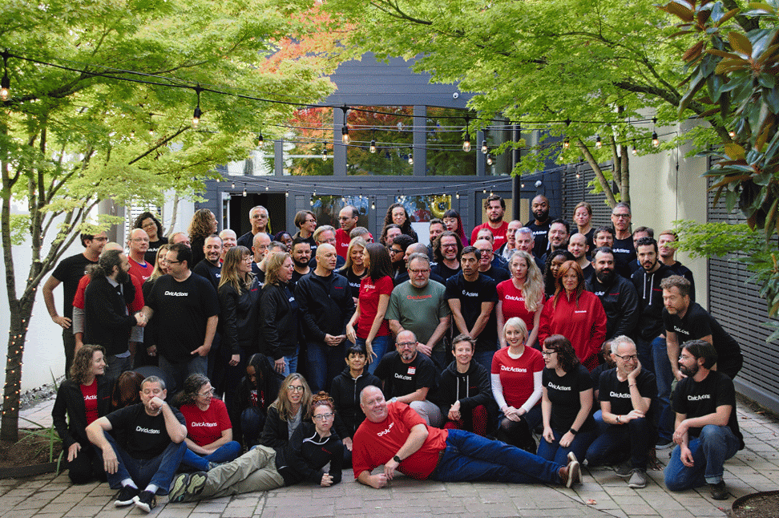
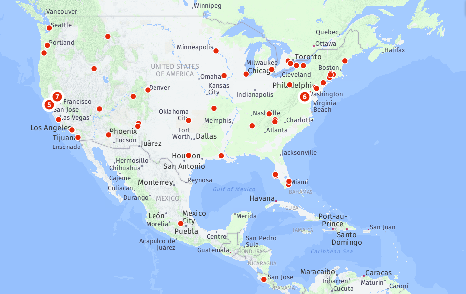
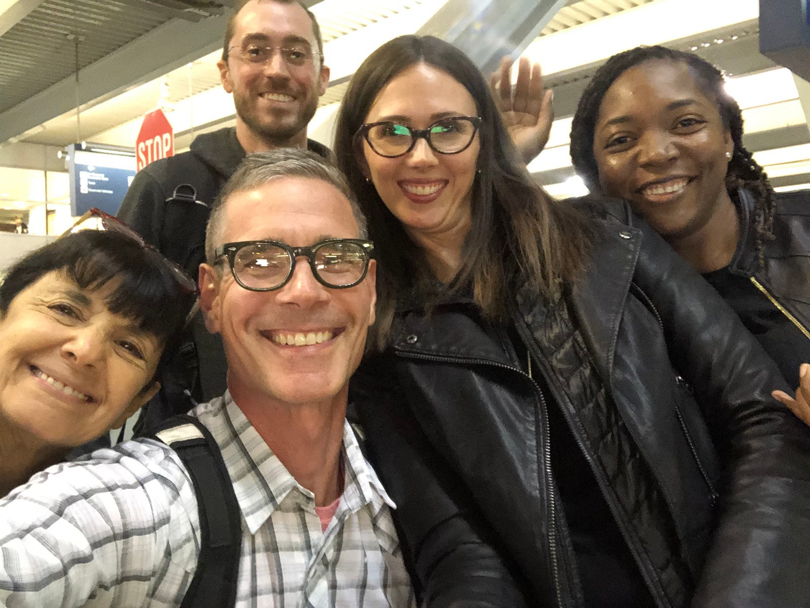
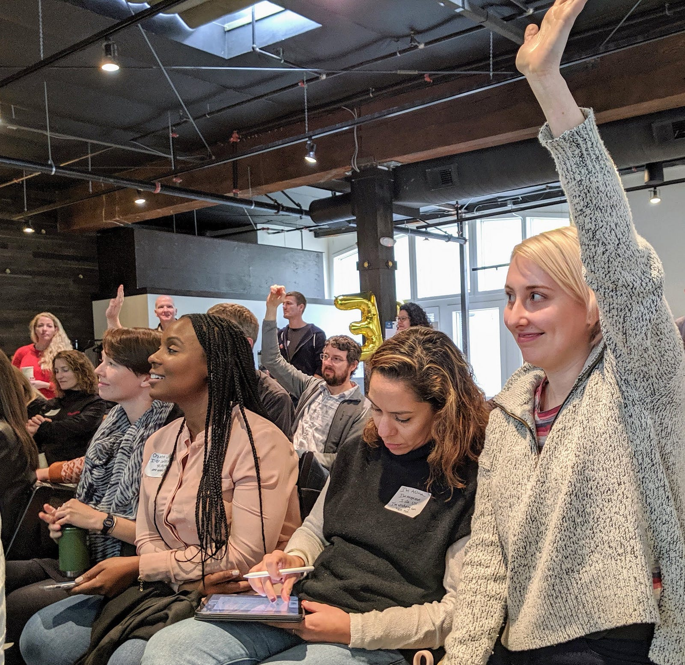
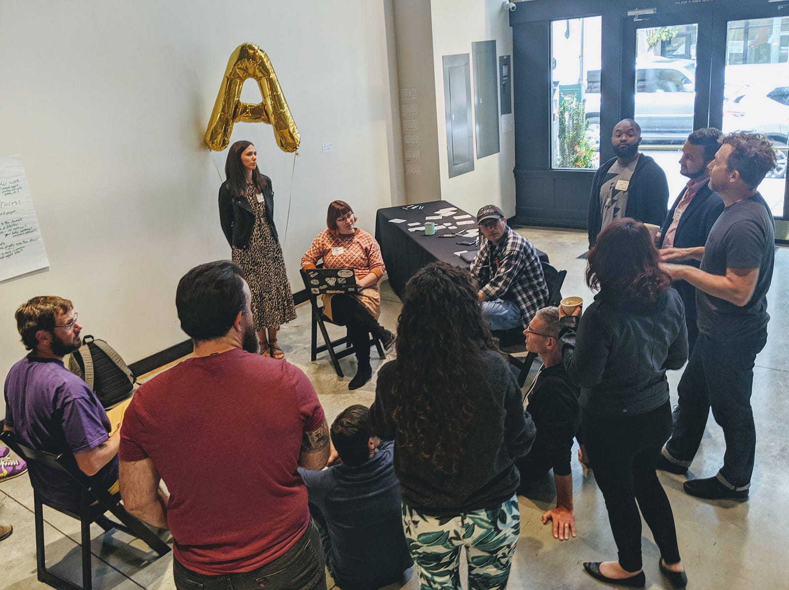
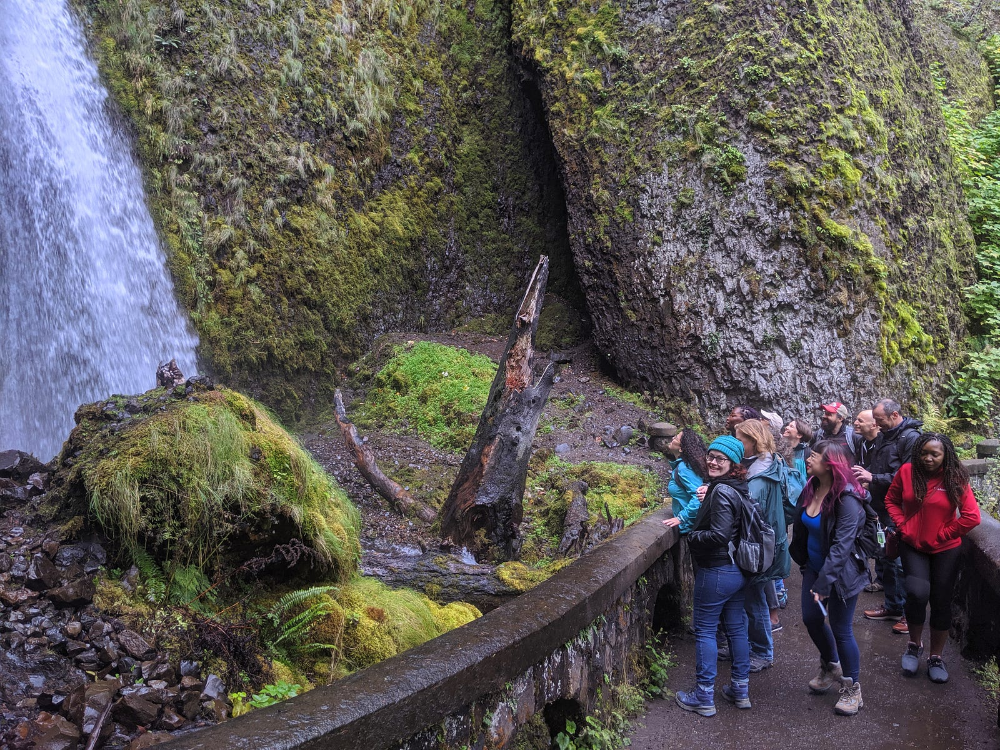
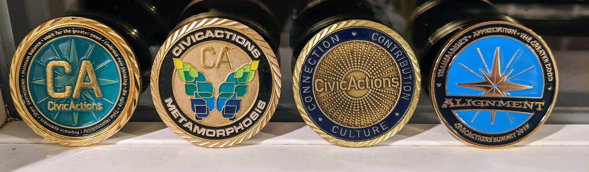
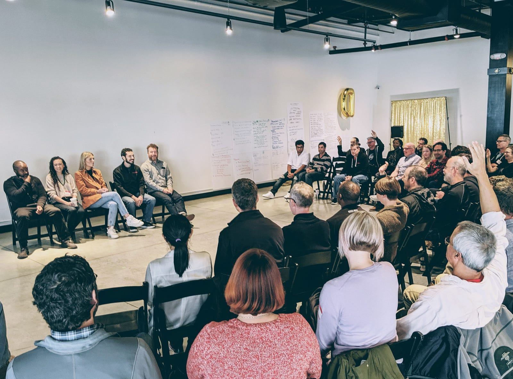
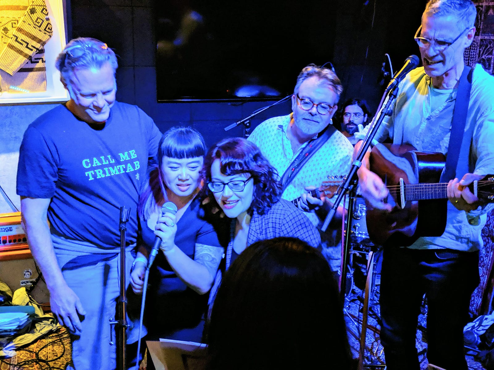

CivicActions has been a distributed company from the start, with a strong culture that supports effective collaboration and connection across distance. But despite everything there is to love about remote work, sometimes it can feel a little…remote.
So every year we make time to come together for a week at our all-company gathering to strengthen our relationships and strategize about our future as a company bringing modern digital services to government. At the Summit, thought-provoking discussions and productive workshopping are balanced with a good dose of celebration, silliness, and fun.
Together at last

CivicActioners work from home bases all across the country, with a handful of folks in Canada and Europe. As we arrived in PDX from all over, the excitement of seeing each other — some of us for the first time — was palpable.

Charting the future

It’s only once a year that we have everyone in the same room together. Our team puts a lot of thought and care into planning the annual Summit so we can take advantage of the special energy that activates new ideas, sparks leadership, and renews our commitment to our work.
We held open conversations throughout the week on topics like building leadership within a “flat” organization and identifying the types of government projects where we can bring the greatest impact.
Making space for new visions

The dedicated time away from our usual projects gives us the chance to have higher-level conversations on topics that help delineate what we care about and where we are headed. We love the open space model for the way it encourages cross-pollination of different perspectives and quickly generates actionable ideas.
Getting out

Our team prioritizes balance in our daily work so we can stay happy and productive, and the Summit was no exception. One afternoon we took a break from brainstorming and divided into smaller groups to play disc golf, visit the art museum, puzzle through an escape room, hike on gorgeous trails, and munch on Portland’s legendary gourmet donuts.
Taking time for appreciation

The “Coin Ceremony” is one of the most cherished traditions of our annual Summit. We make space for each person to be acknowledged with spoken words of appreciation by fellow team members. Not only do individuals feel personally uplifted and supported by this exercise, the entire team also gains insight into the unique value of others they don’t normally work with. Given the larger size of our group this year, the ceremony took a full day, but remarkably the warm feelings kept everyone going through the afternoon.

Celebrating with style

Our team is full of talented musicians who help us celebrate the conclusion of our time together with a hootenanny — a full two-hour set played by rotating ensembles of CivicActioners. This year we were treated to many favorite classics, as well as bluegrass tunes played on a 400-year-old mandocello.
We’re hiring!
Are these photos giving you serious FOMO? We’re looking for folks who want to join our inclusive, fun-loving team in building better government digital services. Learn more about our application process and check out our open positions.